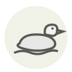

Teal ✦
Sarcelle
| Latin name | Anas crecca |
|---|---|
| Family | Meat & poultry |
| Origin | Coastal marshes and floodplains |
| Season (France) | September – January |
| Flavour | Meaty · Briny · Delicate |
| Typical price (France) | 12–22 €/pièce |
What it is
Europe’s smallest dabbling duck weighs around 300 g and feeds by sieving mud at the surface rather than diving, so it tastes of the marsh and never of fish. One bird is one portion, and it is out of the oven before a mallard has come up to temperature.
In the kitchen
Eight to ten minutes at 240 °C breast up, then ten minutes resting — the bird is small enough that carry-over finishes it. Detach the legs and give them five minutes more; they will not cook at the pace of the breast.
Goes with
Turnip Orange Juniper berry Butter Cognac Celeriac Black pepper
Same species
Mallard Pekin duck Century egg (pidan) Duck heart Duck confit Stuffed duck neck
In season alongside
Abalone Salt marsh lamb Ark shell Snipe Hind Capon
Something wrong here, or missing? Tell us